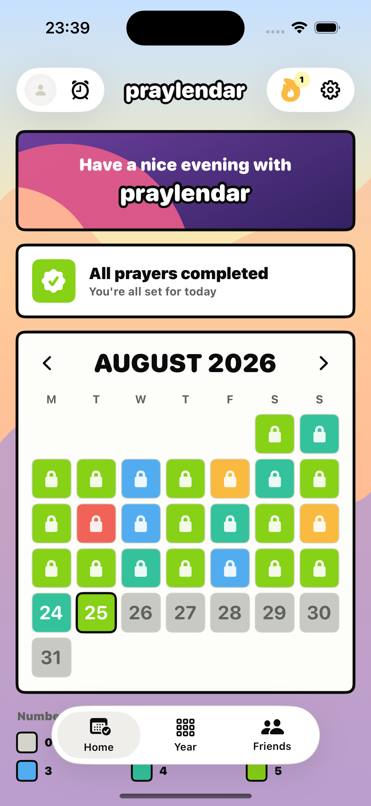
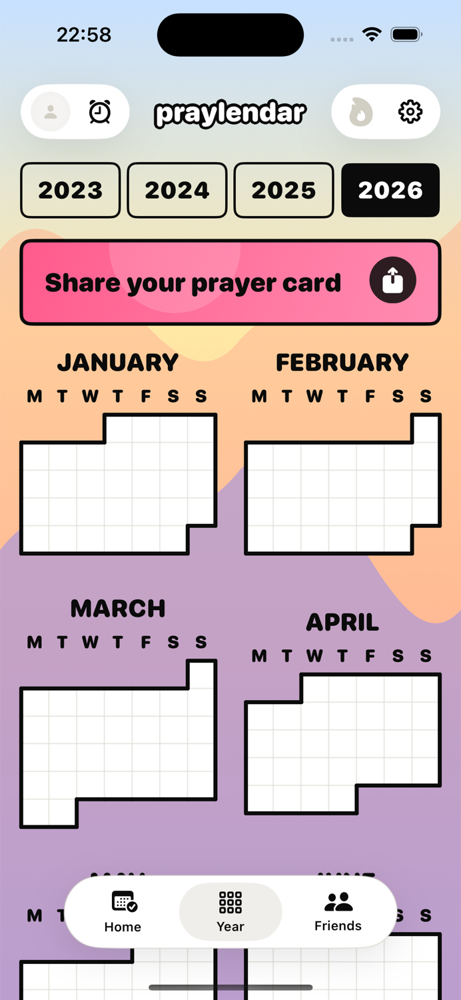

COLOR-CODED PRAYER CALENDAR
Your daily prayers,
visible over time.
Praylendar turns the number of prayers completed each day into a color, then lets you move from one week to the full year.

Read a month in seconds
Every square is one day. Its color represents zero, one, two, three, four or five completed prayers. Future days remain muted and older locked days keep their recorded color.

Zoom out to the whole year
The year view keeps the same colors at a smaller scale. You can notice stronger months, quiet stretches and the shape of your consistency without reading a report.
The view is read-only, so reviewing the year never changes a prayer entry by accident.
Export your prayer calendar
Praylendar can create a shareable week, month, 90-day or annual card. The calendar is centered, the legend stays aligned, and the app mark makes it clear that the image came from Praylendar.
- All export periods are available for free.
- Choose from several languages, including Arabic.
- Your image is generated on the device and shared only when you choose.
Start with the daily tracker
See what gets recorded before it reaches the calendar.